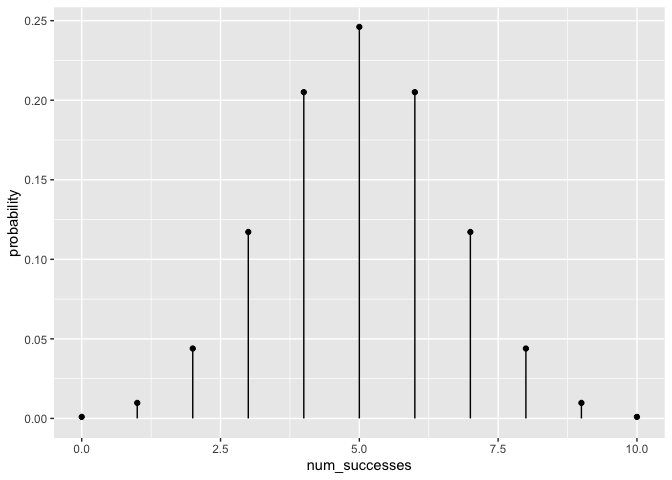
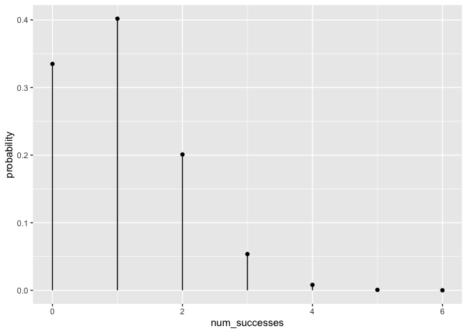

See also:
- more learning materials: https://github.com/EvaMaeRey/ay_2023_2_advanced_individual_study
- sibling project: https://github.com/EvaMaeRey/ma206equations
Abstract
Mathematical fluency involves frequent use of probability distributions. However, visualizing these distributions can be tedious. In a fixed statistics and probability curriculum, the set of distributions to be mastered is well defined. In such settings having shortcuts to produce or ingest these distributions in analytic software for display and analysis could be beneficial for students and instructors alike. The goal of this project is to provide ready-to-use objects (dataframes) and functions that will meet students will make it easier to engage computationally and with these distributions. We make these objects and functions available in the R package ma206distributions.
Which distributions are relevant for the statistics and probability course?
A good start for looking at the core of distributions in the ma206 course guide:
- binomial
- geometric
- normal distribution
- random
Objectives
- Provide functions that return dataframes relating outcomes and probabilities for binomial and geometric distributions
- Providing quick-viz stamp functions for binomial and geometric distributions (normal and t exist in ggxmean); also think about rewrite for stamp_normal (i.e. what should height distribution look like?)
- Provide additional dataframes for ma206 that are probabilities from curriculum (probability problems in text book).
- Provide interactive app which 1) demonstrates distribution characteristics, allowing easy manipulation of parameters 2) connects to new package functionality by quoting back code underlying the app.
1. provide data frames that relate outcomes and probabilities
We can look at vectors of outcomes, and then use dbinom to get back a vector of probabilities.
dbinom(num_successes, prob = .5, size = 10)## [1] 0.0009765625 0.0097656250 0.0439453125 0.1171875000 0.2050781250
## [6] 0.2460937500 0.2050781250 0.1171875000 0.0439453125 0.0097656250
## [11] 0.0009765625library(ma206distributions)
# probability of number of heads in 10 coin flips
tidy_dbinom(single_trial_prob = .5, 10)## # A tibble: 11 × 4
## num_successes probability single_trial_prob num_trials
## <int> <dbl> <dbl> <dbl>
## 1 0 0.000977 0.5 10
## 2 1 0.00977 0.5 10
## 3 2 0.0439 0.5 10
## 4 3 0.117 0.5 10
## 5 4 0.205 0.5 10
## 6 5 0.246 0.5 10
## 7 6 0.205 0.5 10
## 8 7 0.117 0.5 10
## 9 8 0.0439 0.5 10
## 10 9 0.00977 0.5 10
## 11 10 0.000977 0.5 10# probabilities of rolling 0, 1, 2, 3 or 4 sixes in 4 die roles
tidy_dbinom(single_trial_prob = 1/6, 4)## # A tibble: 5 × 4
## num_successes probability single_trial_prob num_trials
## <int> <dbl> <dbl> <dbl>
## 1 0 0.482 0.167 4
## 2 1 0.386 0.167 4
## 3 2 0.116 0.167 4
## 4 3 0.0154 0.167 4
## 5 4 0.000772 0.167 4# probability of 0, 1, 2 or 3 wins in 3 spins of a prize wheel
# 12 pie slices, one with big payout
tidy_dbinom(1/12, 3)2. Stamp visualizations
library(ggplot2)
ggplot() +
geom_lollipop(data = tidy_dbinom(single_trial_prob = .5, 10),
aes(x = num_successes, y = probability))
stamp_dbinom <- function(single_trial_prob = .5, num_trials = 10){
geom_lollipop(data = tidy_dbinom(single_trial_prob = single_trial_prob,
num_trials = num_trials),
aes(x = num_successes, y = probability))
}
ggplot() +
stamp_dbinom()
ggplot() +
stamp_dbinom(1/6, num_trials = 6)
ggplot() +
stamp_dbinom(1/12, num_trials = 3)
3. Tidying data from discrete random variable probability problems
Tidying up data is important so that when the data is inputted into R or any coding language. This process of ‘tidying’ data creates a well-organized and structured format that is easier for data analysis and visualization.
Probability tables are often communicated in untidy, wide forms not easily ingested by statistical software. (another example: http://www.stat.yale.edu/Courses/1997-98/101/ranvar.htm#:~:text=A%20discrete%20random%20variable%20is,then%20it%20must%20be%20discrete) For example, the table was provided for a probability problem about a spinning wheel with pie sectors with various prize award amounts:
| sector_type | No Prize | Win $1 | Win $3 |
| frequency | 9 | 1 | 2 |
The table summarized the situation:

To get the data into a tidy, ready-to-use form, we transposed the table from wide to long so that a variable is a columns and the column headers inform us about the content. This way, each row forms an observation, in this case an event type. The spinning of the prize wheel has three outcomes based on which sector type the wheel landed on: no prize, win $1, and win $3. We added a numeric column ‘payout’ too which we makes the data easier to use from a mathematical standpoint. Below is our tidied data.
| sector_type | frequency | payout |
|---|---|---|
| No Prize | 9 | 0 |
| Win $1 | 1 | 1 |
| Win $3 | 2 | 3 |
In our package we include the data structured in this way, and call the object prize_wheel:
We see that we can easily visualize the joint distribution of payout and frequency using the ggplot2 tool that is used heavily in the statistics part of the class.
library(tidyverse)
prize_wheel %>%
ggplot() +
aes(x = payout) +
aes(y = frequency) +
geom_lollipop() +
aes(weight = frequency) +
geom_fulcrum(color = "red",
shape = 2, size = 5)
The tabular data can also be used to walk through computations, like finding the expected value of the prize wheel spin.
library(tidyverse)
library(ggxmean)
ggxmean:::stamp_space() +
stamp_normal_dist()
Project timeline
| Timing | Activity and Deliverable | Hours |
|---|---|---|
| 0-3 weeks | Background on writing functions in R and package architecture | 15 |
| 3-6 weeks | ggplot2 programming basics | 15 |
| 6-10 weeks | Building functionality easily visualizing probability distributions (normal, t, binomial, geometric) | 15 |
| 10-12 weeks | Showcasing and soliciting feedback | 15 |
| 12-15 weeks | Incorporating feedback | 10 |
| Final | Report and presentation. | 10 |
Some initial code ideas…
Below, we do some of the visualization with base R and base ggplot2. The aim is to provide code that feels much more effortless and fun to use to visualize distributions.
Visualizing a binomial distribution without {ma206distributions} functions
The equations in the plot were produce in the following fashion (no functions or package pre-built):
single_trial_prob <- .5
num_trials <- 10
0:num_trials ->
possible_outcomes
dbinom(x = possible_outcomes,
size = 10,
prob = single_trial_prob) ->
probs
tibble(possible_outcomes, probs) %>%
ggplot() +
aes(x = possible_outcomes) +
scale_x_continuous(breaks = possible_outcomes) +
aes(y = probs) +
geom_point(fill = "white") +
aes(xend = possible_outcomes,
yend = 0) +
geom_segment() +
labs(subtitle = "Course idea #0: For multiple trials, the probability of a certain number of successes..." %>%
str_wrap(60),
x = "Number of Successes in 10 trials",
y = "Probability") +
geom_text(aes(label = probs %>% round(4)),
nudge_y = .01) +
annotate(geom = "text",
x = 1.5,
y = .2,
label = "{{{}[N]}*C * {{}[k]}} %.% p^{k}*q^{N - k}",
parse = TRUE,
size = 5) ->
binomial_distribution
binomial_distribution
Another possibility is using the stat_function() function in ggplot2 to produce visualizations of a binomial distribution. Below, we show how you can visualize the binomial distribution for 20 trials and .2 is the probability of success for each trial. Using the stat_function() carefully, you can get a similar outcome. However, there is a lot of coordination that’s required: 20 shows up about three times in the construction for example in xlim(); in n = 21 (20 + 1 possible outcomes); and finally in the args list. Producing this plot requires a lot of foreknowledge. With our alternative strategies, (delivering data frames and stamps), we hope to give students something they can produce easily, and then have a conversation about why the distribution has the form it does.
library(ggplot2)
ggplot() +
xlim(0, 20) +
stat_function(fun = dbinom,
geom = "point",
n = 21,
args = list(size = 20, prob = .2)) +
labs(y = "Probability") +
labs(x = "Number of successes in 20 trials") +
labs(title = "Given 20 trials where the probability for success in a single\n trial is .2, what are the probabilities for each possible\nnumber of observed successes ")
Visualizing a Discrete Random Variable without {ma206distributions} functions
Probability problems could be structured as data frames visualized with the same tools used in the stats part of the class.
tibble(event = c("totaled", "fender bender", "accident free"),
probability = c(.01, .09, .9),
payout = c(20000, 5000, 0)) ->
expected
plotmath_ev <- latex2exp::TeX("$E[X] = x_1p_1 + x_2p_2 + x_3p_3 ...x_np_n = \\sum_1^n{x_ip_i}$")
plotmath_var <- latex2exp::TeX("$Var(X) = E[(X-\\mu)^2] = \\sigma^2_x = \\sum_1^n(x_i-\\mu)^2p_i$")
plotmath_sd <- latex2exp::TeX("$\\sigma_x = SD(X) = \\sqrt{Var(X)}$")
expected %>%
ggplot() +
aes(x = payout, y = probability) +
geom_point() +
geom_segment(aes(xend = payout, yend = 0)) +
geom_text(aes(label = probability), size = 5,
vjust = -.5, color = "black") +
geom_fulcrum(aes(weight = probability)) +
geom_vline(xintercept = sum(c(.01*20000, .09*5000)),
linetype = "dashed", color = "black") +
labs(subtitle = "Course idea 8: The expected value E.V. is the 'balancing point' of a Random variable, X. It is the weighted average of values, (weighting values by their probabilities). In large samples from the X, the average will be close to the E.V.;" %>% str_wrap(60)) +
annotate(geom = "label", x =sum(c(.01*20000, .09*5000)), label = sum(c(.01*20000, .09*5000)), y = .5 ) +
scale_y_continuous(limits = c(0,1)) +
annotate(geom = "text", label = plotmath_ev, parse = T,
x = 12000, y = .95) +
annotate(geom = "text", label = plotmath_var, parse = T,
x = 12000, y = .8) +
annotate(geom = "text", label = plotmath_sd, parse = T,
x = 12000, y = .65) ->
discrete_random## Warning in is.na(x): is.na() applied to non-(list or vector) of type
## 'expression'
## Warning in is.na(x): is.na() applied to non-(list or vector) of type
## 'expression'
## Warning in is.na(x): is.na() applied to non-(list or vector) of type
## 'expression'
See also: